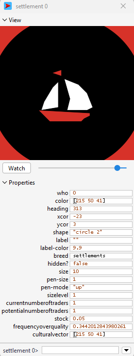
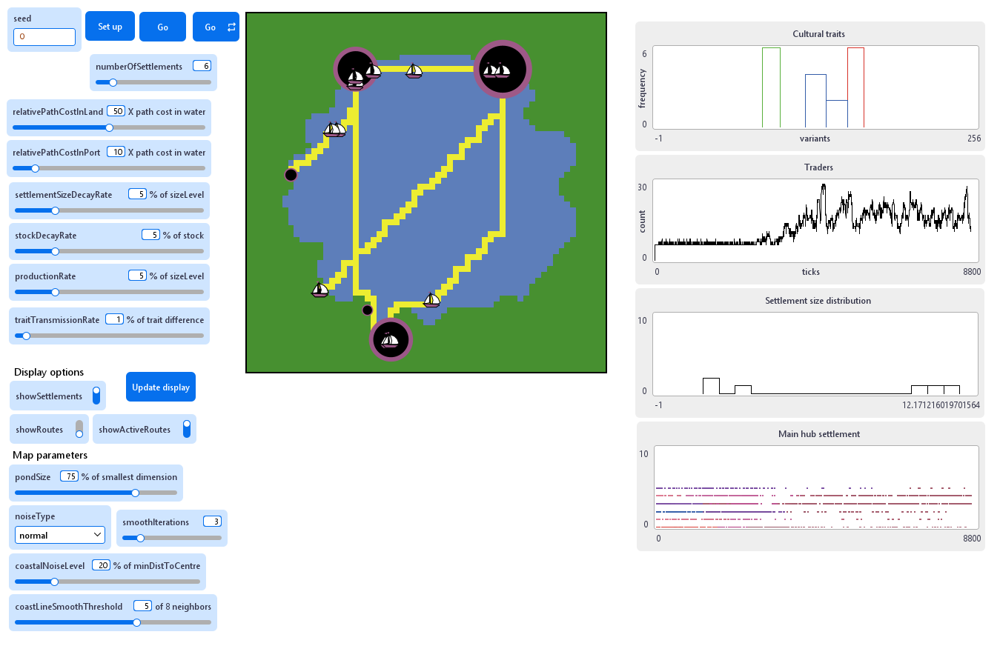
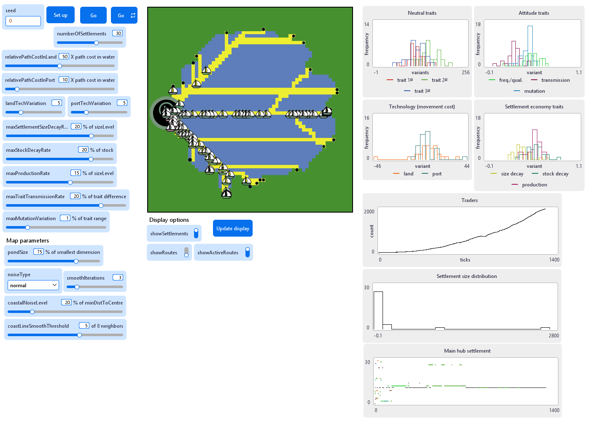

20 Implementing complex agents
20.1 Second-tier model
We will now go over the implementation of the second-tier PondTrade model (steps 10 to 13). The pace in this section will be significantly faster. I ask you only to comprehend the main aspects added at each step and concern yourself only with the files already in the root directory.
Remember the conceptual model for this tier, as we defined back at the beginning.

Pond Trade conceptual model at start (second tier)
Apart from assimilating the changes we made to the first-tier model, our goal here will be to implement the following:
- a cultural “vector” of settlements, representing a series of cultural traits of the aggregated population of the settlements
- a mechanism to modify these cultural vectors through the movement of trade goods, according to a global measure of what we call here “cultural permeability”
- a mechanism that modifies cultural vectors randomly through time (undirected variation)
20.2 Step 10: cultural vectors
Let us start with implementing the settlements’ cultural vector (culturalVector). Since there is, for now, no meaning of traits, we can use this new variable to hold the values of the three numbers defining an RGB colour (i.e., red, green, blue; values between 0 and 255) that will then be shown as the icon colour of the settlement.
settlements-own
[
...
culturalVector
]
...
to create-coastal-settlements
; consider only coastal patches
let coastalPatches patches with [(isLand = true) and (any? neighbors with [isLand = false])]
repeat numberOfSettlements
[
; ask a random coastal patch without a settlement already
ask one-of coastalPatches with [not any? settlements-here]
[
sprout-settlements 1 ; creates one "turtle" of breed settlements
[
set sizeLevel 1 ; the size level is initiated at minimum (i.e., 1)
set stock 0
set frequencyOverQuality random-float 1
set culturalVector extract-rgb color
; for now, we represent three continuos cultural traits of settlements
; initialized as the rgb values of the settlement color.
set shape "circle 2"
]
; replace the land path cost with the port pathCost
set pathCost relativePathCostInPort
; exclude this patch from the pool of coastal patches
set coastalPatches other coastalPatches
]
]
end
to update-display
paint-routes
paint-active-routes
; scale the size of settlements according to their dynamic free-scaled sizeLevel
let maxSettlementSize max [sizeLevel] of settlements
ask settlements
[
set hidden? not showSettlements
set size 1 + (sizeLevel / maxSettlementSize) * 9
set color rgb (item 0 culturalVector) (item 1 culturalVector) (item 2 culturalVector)
]
ask traders
[
ifelse (isActivated)
[ set hidden? false ]
[ set hidden? true ]
]
end
Pond Trade step 10 - settlement with cultural vector
Next, we add a mechanism for traders to record the state of their base culturalVector while loading their cargo and pass this vector as an influence over another settlement’s culturalVector, when unloading. More specifically, this influence will decrease the difference between values in each trait to a measure dependent on the parameter traitTransmissionRate (slider, from 0 to 25, by 0.01, default value = 1).
traders-own
[
...
culturalSample
]
...
to load-cargo ; ego = trader
let settlementHere one-of settlements-here
; load cargo
set cargoValue [stock] of settlementHere
ask settlementHere [ set stock 0 ] ; empty the settlement stock
set culturalSample [culturalVector] of settlementHere
end
...
to add-trade-effect [ aTrader ] ; ego = settlement
; cultural transmission trader to port
let newCulturalVector []
foreach culturalVector
[ ?1 ->
let otherSettlementTrait item (length newCulturalVector) [culturalSample] of aTrader
let traitChange (otherSettlementTrait - ?1) * (traitTransmissionRate / 100)
set newCulturalVector lput (?1 + traitChange) newCulturalVector
]
; print (word "========== " self " ============")
; print (word "old vector: " culturalVector ", new vector: " newCulturalVector)
set culturalVector newCulturalVector
set sizeLevel sizeLevel + [cargoValue] of aTrader
endWith these changes, the model dynamics will now include a general cultural convergence whenever trade partners become stable, especially when trade hubs emerge. After a few thousand simulation steps, the visual result is that all settlements hold the same colour.

Pond Trade step 10
According to our initial conceptual model, the next step is implementing a mechanism of undirected variation. We can easily include this as the addition of noise to the value of each trait on the pass of each time step. As with transmission, we could have it regulated by a global parameter of trait mutation rate. However, it may feel already that we have too many global parameters that we can easily conceive as varying widely among settlements. Thus, we move forward by breaking our plan and exploring the idea emerging during the implementation process, back when we defined frequencyOverQuality: what if most of the parameters about settlements were implemented instead as traits in culturalVector and allowed to evolve?
20.3 Step 11: trait selection
To internalise most parameters as trait values in culturalVector, we must convert all former parameters into hyperparameters, i.e. those values that will be used only to set a range of variation of the settlement-specific values.
| before (step 10) | after (step 11) |
|---|---|
| settlementSizeDecayRate | maxSettlementSizeDecayRate |
| stockDecayRate | maxStockDecayRate |
| productionRate | maxProductionRate |
| traitTransmissionRate | maxTraitTransmissionRate |
| (traitMutationRate) | maxMutationVariation |
We will also exploit the opportunity further and create two extra elements to which we will refer as land and port technology, which will allow us to modify how pathCost affects traders’ decisions and movements. For these, we need to introduce two extra hyperparameters landTechVariation and portTechVariation. Notice that we could do the same to the path cost in water, though it would affect the rhythm of the model more drastically.
We change the code for initialising settlements so that each trait within culturalVector is sampled randomly according to the hyperparameters above:
to create-coastal-settlements
; consider only coastal patches
let coastalPatches patches with [(isLand = true) and (any? neighbors with [isLand = false])]
repeat numberOfSettlements
[
; ask a random coastal patch without a settlement already
ask one-of coastalPatches with [not any? settlements-here]
[
sprout-settlements 1 ; creates one "turtle" of breed settlements
[
set sizeLevel 1 ; the size level is initiated at minimum (i.e., 1)
set stock 0
set culturalVector extract-rgb color ; 0#, 1# and 2#
; We add seven continuos cultural traits to the neutral RGB traits,
; representing their attitude and ability involving
; aspects we previously fixed as parameters and one variable:
; 3# relativePathCostInLand (normal distribution around global parameter)
set culturalVector lput (random-normal 0 landTechVariation) culturalVector
; 4# relativePathCostInPort (normal distribution around global parameter)
set culturalVector lput (random-normal 0 portTechVariation) culturalVector
; 5# settlementSizeDecayRate [0 - maxSettlementSizeDecayRate)
set culturalVector lput (random-float maxSettlementSizeDecayRate) culturalVector
; 6# stockDecayRate [0 - maxStockDecayRate)
set culturalVector lput (random-float maxStockDecayRate) culturalVector
; 7# produtionRate [0 - maxProductionRate)
set culturalVector lput (random-float maxProductionRate) culturalVector
; 8# frequencyOverQuality [0 - 1)
set culturalVector lput (random-float 1) culturalVector
; 9# traitTransmissionRate [0 - maxTraitTransmissionRate) *** now, it means specifically the 'openess' of a settlement towards other variants of a trait
set culturalVector lput (random-float maxTraitTransmissionRate) culturalVector
; 10# mutationVariation [0 - maxMutationVariation)
set culturalVector lput (random-float maxMutationVariation) culturalVector
set shape "circle 2"
]
; replace the land path cost with the port pathCost
set pathCost relativePathCostInPort
; exclude this patch from the pool of coastal patches
set coastalPatches other coastalPatches
]
]
endAnd then replace the former parameters with the corresponding indexed values in culturalVector:
to update-settlements
ask settlements
[
let thisSettlement self
; the sizeLevel of settlements decays with a constant rate, up to 1 (minimum)
set sizeLevel max (list 1 (sizeLevel * (1 - ((item 5 culturalVector) / 100)) ) )
; production in stock also decays with a constant rate
set stock stock * (1 - ((item 6 culturalVector) / 100))
; prodution is generated in proportion to sizeLevel, following a constant rate
set stock stock + sizeLevel * ((item 7 culturalVector) / 100)
; determine the current and potential number of traders
set currentNumberOfTraders get-current-number-of-traders
set potentialNumberOfTraders get-potential-number-of-traders
; conditions favors the creation of new traders
if (random-float 1 > currentNumberOfTraders / potentialNumberOfTraders )
[
; create a new trader or activate an old one
repeat 1
[
ifelse (any? traders with [not isActivated])
[
ask one-of traders with [not isActivated]
[
setup-trader thisSettlement
move-to thisSettlement
]
]
[
hatch-traders 1
[
setup-trader thisSettlement
]
]
]
set currentNumberOfTraders get-current-number-of-traders ; update currentNumberOfTraders
]
; add variation to the settlement traits (mutation)
mutate-traits
]
end
...
to add-trade-effect [ aTrader ] ; ego = settlement
; cultural transmission trader to port
let newCulturalVector []
foreach culturalVector
[ ?1 ->
let otherSettlementTrait item (length newCulturalVector) [culturalSample] of aTrader
let traitChange (otherSettlementTrait - ?1) * ((item 9 culturalVector) / 100)
set newCulturalVector lput (?1 + traitChange) newCulturalVector
]
; print (word "========== " self " ============")
; print (word "old vector: " culturalVector ", new vector: " newCulturalVector)
set culturalVector newCulturalVector
set sizeLevel sizeLevel + [cargoValue] of aTrader
end
...
to-report get-potential-number-of-traders ; ego = settlement
report (
1 +
(sizeLevel - 1) * (item 8 culturalVector)
)
end
...
to-report get-path-cost [ aPatch aTrader ]
let pathCostOfPatch [pathCost] of aPatch
if ([isLand] of aPatch)
[
ifelse ([any? settlements-here] of aPatch)
[
; path cost in port apply
set pathCostOfPatch pathCostOfPatch + [(item 4 culturalVector)] of [base] of aTrader
]
[
; path cost in land apply
set pathCostOfPatch pathCostOfPatch + [(item 3 culturalVector)] of [base] of aTrader
]
]
report pathCostOfPatch
endFinally, we add a new procedure that apply random (normally-distributed) mutations to all traits separately:
to mutate-traits
let mutationVariationToApply (item 10 culturalVector) / 100
;print "========================================"
;print culturalVector
; #1, #2 and #3
set culturalVector replace-item 0 culturalVector mutate-trait (item 0 culturalVector) 0 255 mutationVariationToApply
set culturalVector replace-item 1 culturalVector mutate-trait (item 1 culturalVector) 0 255 mutationVariationToApply
set culturalVector replace-item 2 culturalVector mutate-trait (item 2 culturalVector) 0 255 mutationVariationToApply
; #3 and #4 (relativePathCostInLand, relativePathCostInPort)
set culturalVector replace-item 3 culturalVector mutate-trait (item 3 culturalVector) (-1 * relativePathCostInLand + 1) 100 mutationVariationToApply ; arbitrary maximum
set culturalVector replace-item 4 culturalVector mutate-trait (item 4 culturalVector) (-1 * relativePathCostInPort + 1) 100 mutationVariationToApply ; arbitrary maximum
; #5, #6 and #6 (settlementSizeDecayRate, stockDecayRate, produtionRate)
set culturalVector replace-item 5 culturalVector mutate-trait (item 5 culturalVector) 0 maxSettlementSizeDecayRate mutationVariationToApply
set culturalVector replace-item 6 culturalVector mutate-trait (item 6 culturalVector) 0 maxStockDecayRate mutationVariationToApply
set culturalVector replace-item 7 culturalVector mutate-trait (item 7 culturalVector) 0 maxProductionRate mutationVariationToApply
; #8, #9 and #10 (frequencyOverQuality, traitTransmissionRate, mutationVariation)
set culturalVector replace-item 8 culturalVector mutate-trait (item 8 culturalVector) 0 1 mutationVariationToApply
set culturalVector replace-item 9 culturalVector mutate-trait (item 9 culturalVector) 0 maxTraitTransmissionRate mutationVariationToApply
set culturalVector replace-item 10 culturalVector mutate-trait (item 10 culturalVector) 0 maxMutationVariation mutationVariationToApply
;print culturalVector
end
to-report mutate-trait [ traitValue minValue maxValue mutationVar ]
report (max (list minValue min (list maxValue (traitValue + (random-normal 0 mutationVar) * (maxValue - minValue)))))
endTo better visualise the distribution of traits along with the simulation, we add four new Plots to our interface. These are histograms of the values of each trait and settlement, giving us a sense of both convergence or cultural integration and possibly revealing any evolutionary trends caused by trait selection. For instance, we would expect high selective pressure for settlements with a higher production rate since it is part of the positive feedback loops we implemented earlier in the first tier.

Pond Trade step 11
At this stage, we also had to introduce stop conditions to interrupt simulation runs, especially given the potential number of traders under some parameter configurations. The conditions are added to the go procedure:
to go
tick
if (ticks = 10000 or count turtles > 500) [ stop ]
update-traders
update-settlements
update-display
end